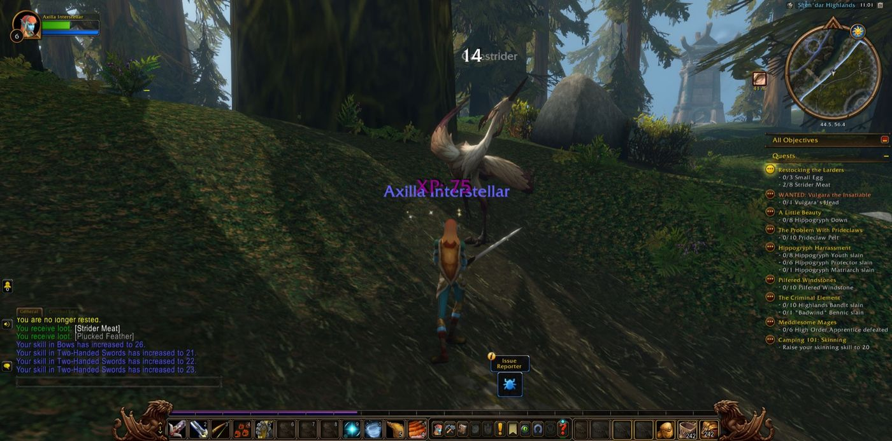
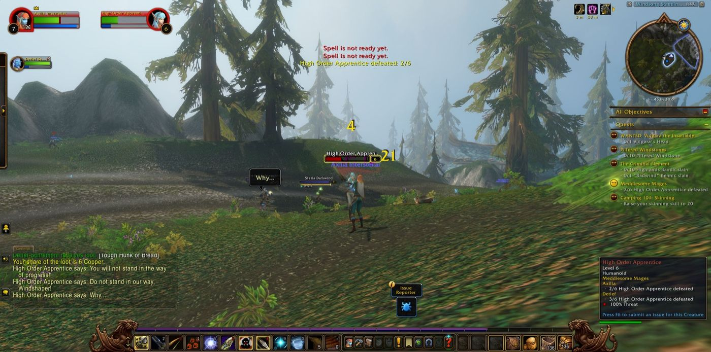
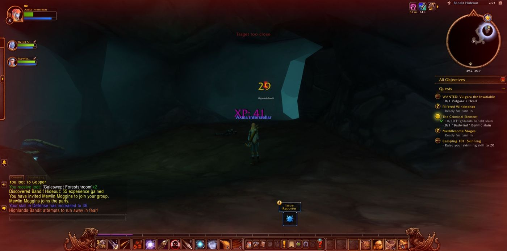

Of Axilla Interstellar · I
The Windstones of Zephras Isle
September 28, 2026

Axilla Interstellar, a Windshaper of the Skyborne, began her road in Thendal Village upon Zephras Isle. There she took up the errand called Coming of Age and saw it through before she had well set out. In Thendal Grove she hunted the Juvenile Vuldren for Harmony in Balance. She learned to Walk on Air, went to look upon the Anchor Pylon, and read the Scribbled Note that brought her to Tai'ree Farsight and set her upon the Way of the Hunter. At the Thendal Standing Stones the road went hard against her for a while, yet she returned to it and put down the Al'Aketh Converts and the Roiling Winds that troubled the place. Near the Elemental Convergence she used the Gift of Skysight, and she bore word back for Rorian.


Many small labours followed, and she did not shirk them. She gathered windstones, cleared the Pesky Cirrusflies and then their Queen, and took claws from the Scrawny Ursera. She went against the Al'Aketh Thugs, Brutes and Neophytes alike, until Malduko Cloudcrush himself was slain. Last of all she went down into Thendal Cave, and there Urs'anah, the Foul Matriarch, fell among her scavengers. With that deed done, Thendal had no more to ask of her.


So she took the next step, as the errand was named, and came over the Shen'dar Highlands to Shen'dar Village. There she sat down beside the campfire, as an adventurer should, and took her ease. She learned the cooking craft from Zerril Softbreeze, listened while Illaya Amberwind spoke of the Windshapers, and made herself known to the Innkeeper. Then she went out by Windsong Lake and into the Highlands, gathering eggs and strider meat for the larders and Prideclaw pelts for those who asked them. She drove back the Hippogryph Youths and their Protectors. Sky, a druid, and Ferroda, a hunter, stood with her against the Hippogryph Matriarch, though their fellowship was brief. Afterwards she gathered hippogryph down for A Little Beauty.


At the Windsong Standing Stones Detlef, a shaman, joined her, and he kept her company longer than any other on that road. Together they overcame the High Order Apprentices and went on against the Highlands Bandits. In that labour Axilla came into the strength of her eighth level. Bluesham, another shaman, walked with her only a little way. The Pilfered Windstones were recovered, and in the Bandit Hideout Mewlin and Scabie, both hunters, and Missy, a druid, stood with her until "Badwind" Bennic was slain, and then the company parted with courtesy. Afterwards she was sent to Falaath Village, and there, among the faithful, she learned the plans of the cultists and carried them back to Shen'dar.


New errands waited for her there: Havoc in the Highlands, The Western Watch, and Stolen Supplies. She took them up and turned again toward the Highlands, where the road ran on westward past the pylons, and where it led she did not yet know.


Also seen that night